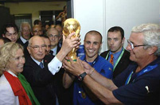

| ПРИВЕТ УЧАСТНИКАМ СОРЕВНОВАНИЙ | ||
|
Виды спорта |
ФутболФутбо́л (англ. football от foot «ступня» + ball «мяч») — командный вид спорта, в котором целью является забить мяч в ворота соперника ногами или другими частями тела (кроме рук) большее количество раз, чем команда соперника.В настоящее время самый популярный и массовый вид спорта в мире. Полное англоязычное название игры, «association football» («футбол по правилам Ассоциации»), было выбрано после создания английской Футбольной ассоциации в 1863 году, чтобы отличать эту игру от других разновидностей футбола, существовавших в то время например регби-футбол («rugby football», «футбол по правилам Школы Рагби»), где была разрешена игра руками. Со временем длинные названия вариантов игры стали сокращаться в повседневной речи и печати. Сначала в Англии было распространено сокращение «assoc.», затем в 1880-х годах от него образовался термин «соккер» (англ. soccer) путём добавления |
|
| ГЛАВНОЕ НЕ ПОБЕДА,А УЧАСТИЕ | ||